Same Everrest platform, a different question and a different toolbox. Codex assembles a profiling + integrity + forensic kit, then digs out six data-trust defects the naive pass missed entirely. Every chart below came from a real run - seed 42, learn-python env, 232,155 rows generated and analyzed.
Everrest is a B2B2C retail platform: 400 merchants sell to 20,000 consumers across six Southeast Asian markets. This time the category team is not asking "what's growing" - they are asking "can we trust the platform's data before we build this quarter's dashboards on it?" Eight tables come over from a fresh data pipeline. The discipline is refusing to trust any of them until the keys, types and joins have been proven.
The generator reuses the canon Everrest schema (M0007 the bulk-wholesale outlier and the weekend + November seasonality stay in as real background) but plants a different six defects from the Claude edition - the kind that hide across joins, not inside a single column. Each is documented in the generator docstring, so Step 5 becomes a recall test.
import numpy as np SEED = 42; rng = np.random.default_rng(SEED) # Quirk 1: ~2.5% of line items reference a non-existent product_id. orphan = rng.choice(df.index, size=int(0.025 * len(df)), replace=False) df.loc[orphan, "product_id"] = [f"P9{i:04d}" for i in range(len(orphan))] # Quirk 2: stale Sep-Nov snapshot - unit_price frozen at 0.82x catalog. df.loc[stale, "unit_price"] = np.round(df.loc[stale, "unit_price"] * 0.82, 2) # Quirk 3: PH payments logged in local time -> paid_ts ~8h BEFORE order_ts. df.loc[ph, "paid_ts"] = df.loc[ph, "paid_ts"] - pd.Timedelta(hours=8) # Quirk 5: fabricated merchant reports round-hundred amounts (Benford red flag). df.loc[fab, "amount"] = rng.choice([100,200,300,400,500,600,700,800,900], fab.sum())
The Claude edition asked "what should we act on this quarter?" This one asks the question that has to come first: can the data even be trusted yet? Every chart in Step 5 serves one of these five sub-questions; anything that does not change a decision gets cut.
This is the differentiator. Before writing a line of analysis, Codex activates its agent skills to find the right tools, then pulls open-source profiling, validation and forensic libraries. The output is still a plain Python script that runs anywhere - the toolbox is how it got written well, not a runtime dependency.
The authoring agent. Reads the schema, runs the pipeline, writes and refactors the analysis script from the terminal.
Skill framework whose find-skills routine surfaces the right specialist for a task instead of improvising from zero.
Interrogates the objective before any code - "what would the business pay to know, and what would embarrass it?" - so Step 3 is sharp.
One-shot profile report - types, missingness, distributions per column. The 10-minute head start; it flagged the orphan joins and price drift on its own.
The equivalent profiling card - drops in with ProfileReport(df) where the environment supports it. Reuse beats rebuilding describe().
Missingness matrix - makes it visually obvious that order_items is complete on its own columns and only gaps on JOIN.
Schema + referential-integrity checks as code - turns "product_id must exist in products" into an assertion the pipeline enforces.
Promotes the defects EDA finds into permanent CI gates - the orphan keys and dirty labels never ship twice.
First-digit distribution test - the forensic lens that isolates the fabricated round-number merchant from 400 honest ones.
Chart form follows the relationship; one consistent anomaly color (amber) means "this is the problem" on every chart.
Decision-first scan: DQ gate before analysis, findings ranked by dollar and trust impact, not by p-value.
One sectioned script: the profiling head start, then a data-quality & integrity gate, then the business questions on the cleaned data. 19 visuals, every PNG rendered at 300 DPI from the actual run, every title a finding rather than a technique. Grab the real code below - one click, copy, run.
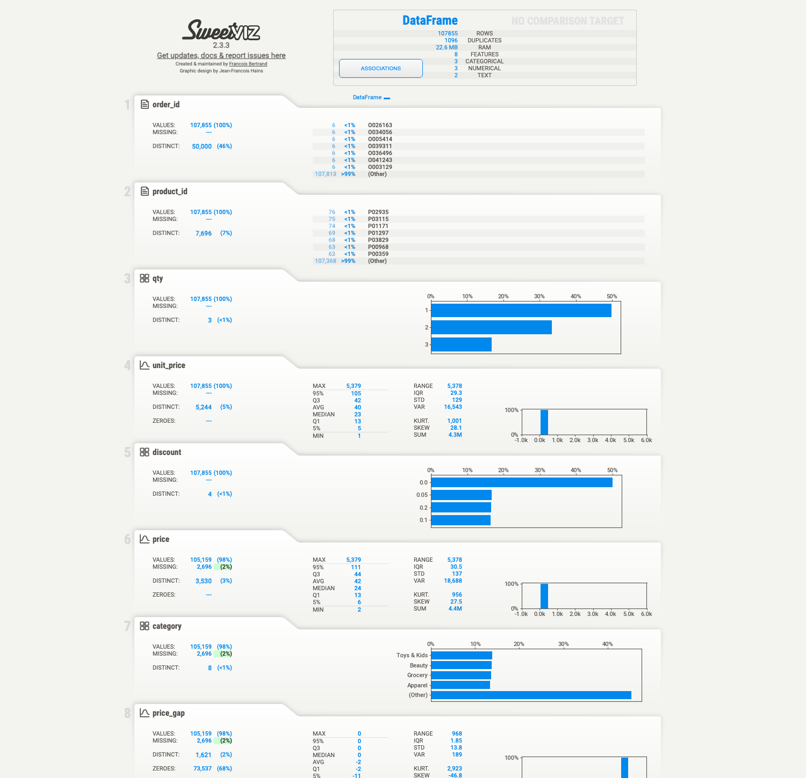
The sweetviz report on the enriched line-item table earns its keep before any custom code: price & category show 2% missing (that is the orphan-product join failing), price_gap has a median of 0 with a negative tail (the stale-price drift), and product_id shows 7,696 distinct values where only 5,000 products exist (the fake orphan ids). Three defects surfaced from a single call - then confirmed one by one below.
# Gate: referential integrity - do the foreign keys resolve? prod_ids = set(products.product_id) oi_orphan = ~order_items.product_id.isin(prod_ids) orphan_value = order_items.loc[oi_orphan, "net"].sum() # Normalize dirty category labels BEFORE any rollup. mcat = merchants.assign(category_clean=lambda d: d.category.replace(CLEAN_CAT).str.strip()) # Timezone check: payment latency must never be negative. pay["lat_h"] = (pay.paid_ts - pay.order_ts).dt.total_seconds() / 3600 neg = pay.lat_h < 0 # 100% of these are PH -> local-time logging
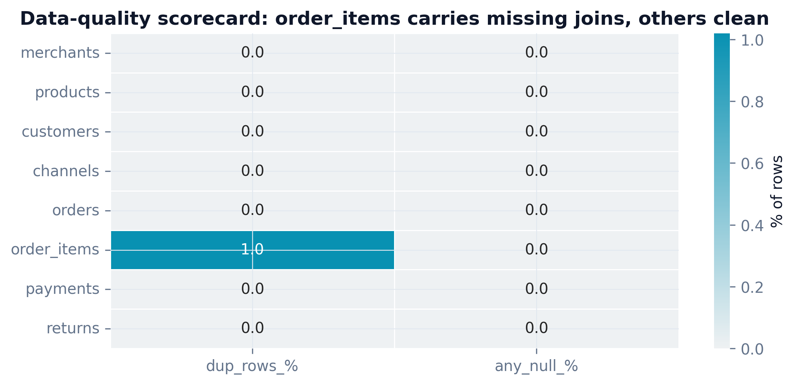
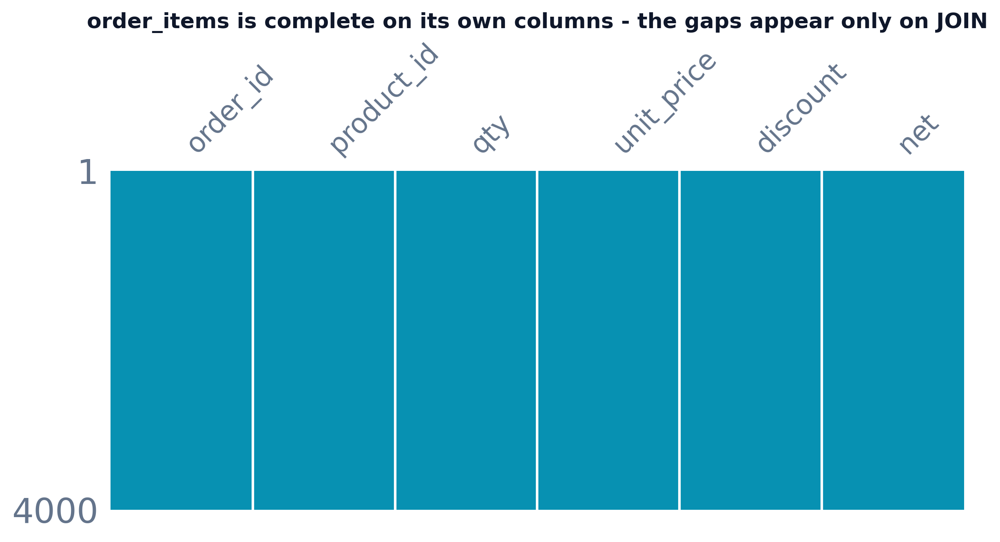
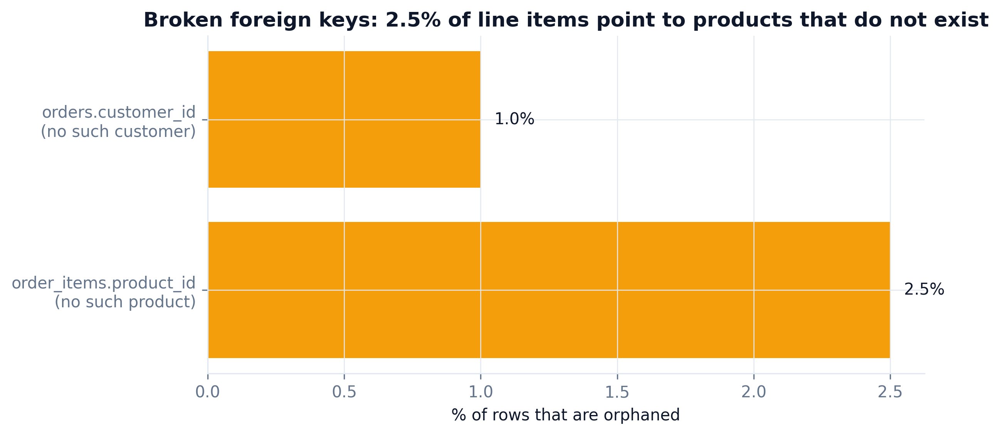
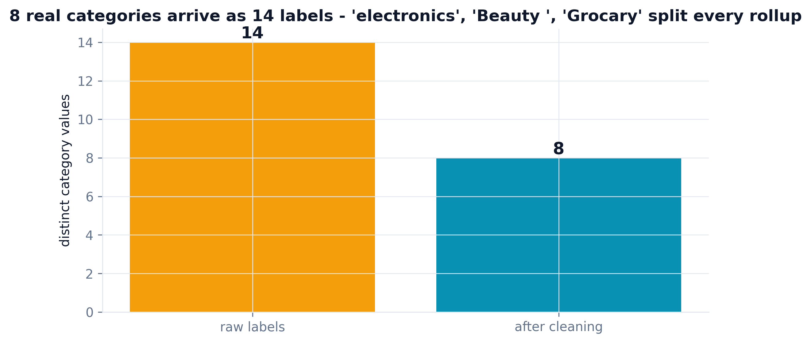
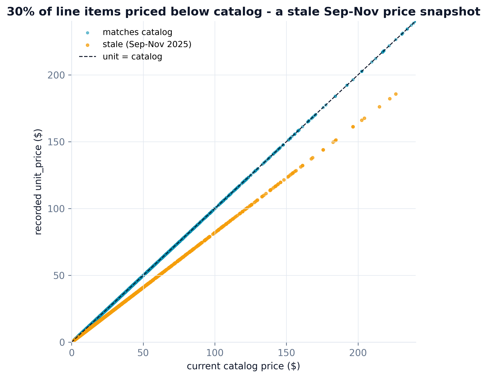
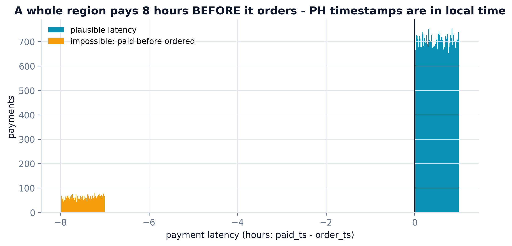
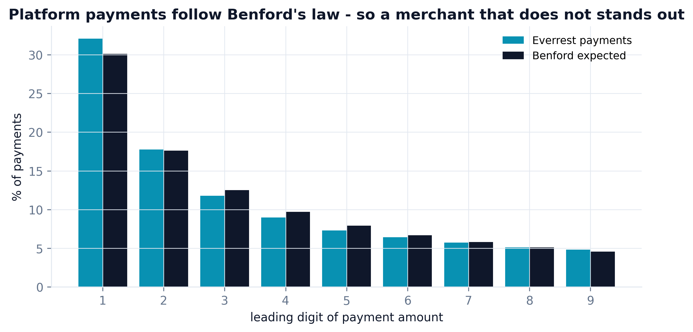
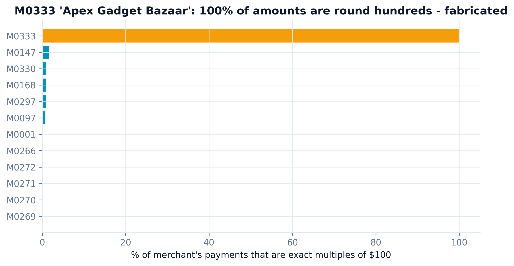
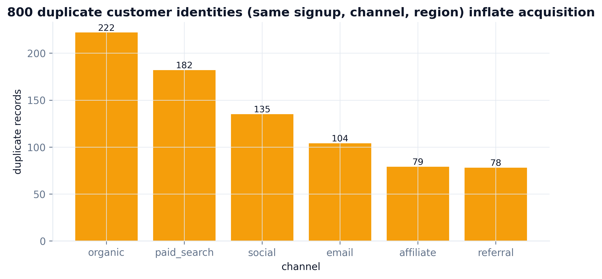
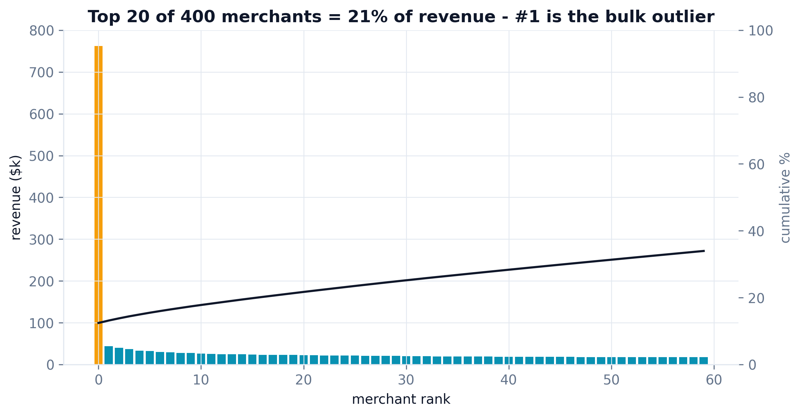
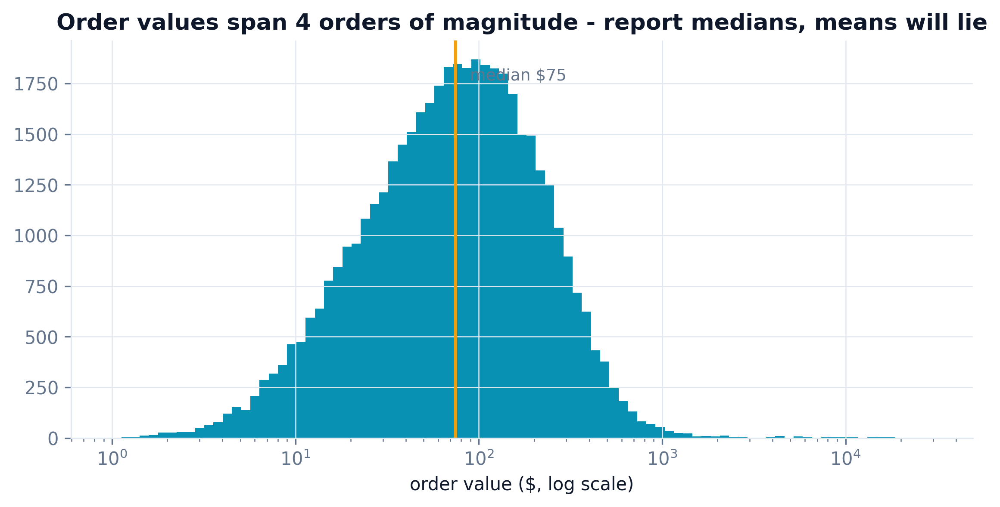
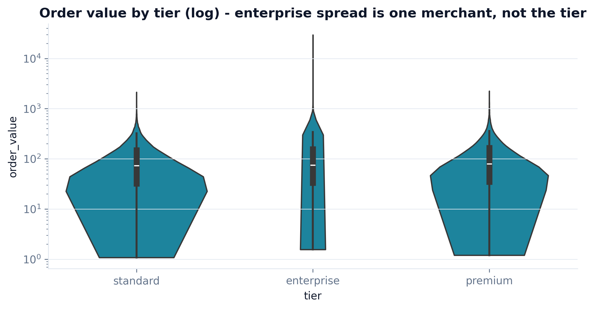
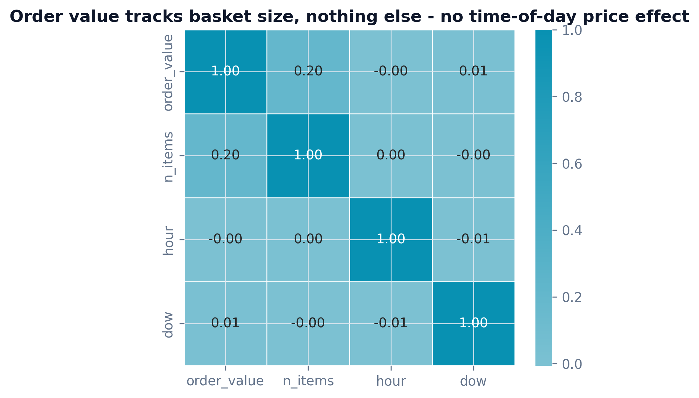
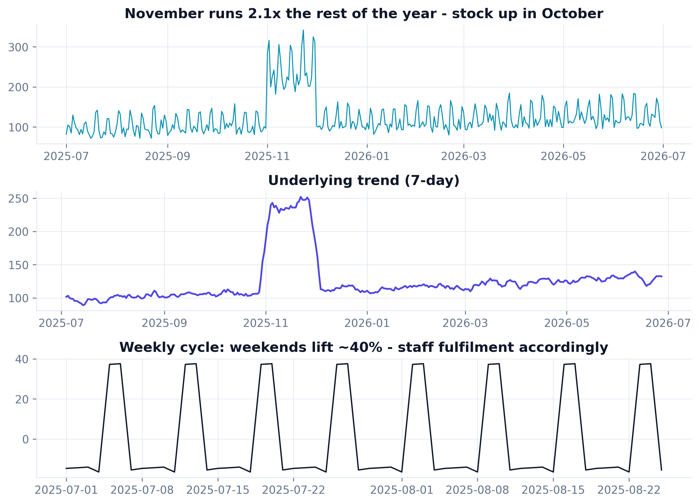
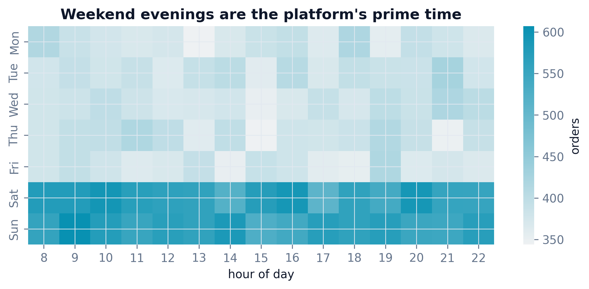
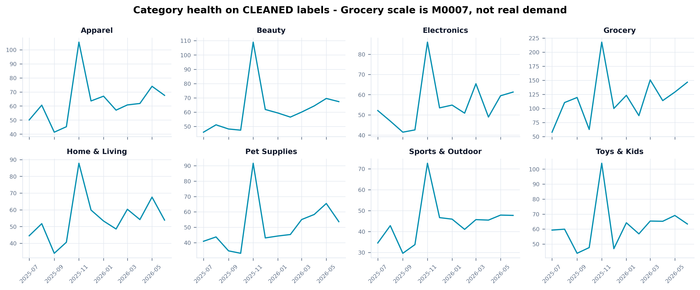
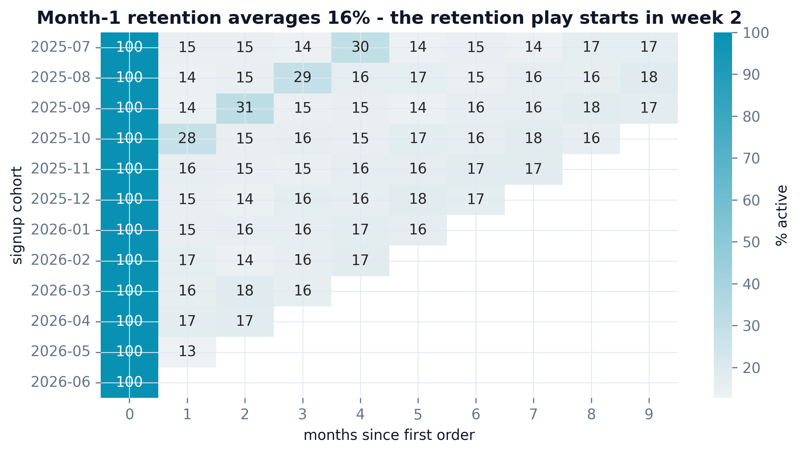
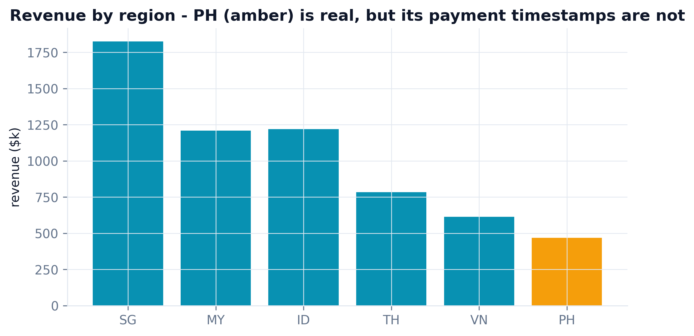
| Planted quirk | Caught by | Impact | Status |
|---|---|---|---|
| Orphan foreign keys (bad ETL join) | Profiling + RI check | $153,996 unattributable | ✓ caught |
| Stale price snapshot (Sep-Nov) | Price-drift scatter | $385,330 understated | ✓ caught |
| Timezone bug (PH paid before order) | Payment-latency histogram | $474,948 bad timestamps | ✓ caught |
| Dirty category labels (8→14) | Cardinality + rollup fix | $557,134 mis-bucketed | ✓ caught |
| Round-number fabrication (M0333) | Benford + round-share | $45,433 reconciliation gap | ✓ caught |
| Duplicate customer identities | Fingerprint dedup | 800 records (3.8%) | ✓ caught |
| Canon re-confirmed: M0007 outlier + seasonality | Pareto + decomposition | 2.1x Nov · 12% of revenue | ✓ confirmed |
A panel of five senior reviewer agents - each with 10+ years in data, data insights, and business - tore into the first pass (eda_codex_v1.py, kept in the repo). v1 ran clean and looked plausible, which is what made it dangerous. Every fix below was applied and the pipeline re-ran; the charts above are the post-review v2.
"v1 joins order_items to products and never checks the keys resolve. 2.5% of line items point at products that do not exist - they just vanish from the join and nobody notices."
"Your revenue-by-category chart has 'Beauty' twice and both a 'Grocery' and a 'Grocary'. You grouped on the raw label - every rollup is silently split."
"v1's latency histogram clips at zero, so the whole PH negative-latency story is hidden. And titles like 'Latency histogram' change no decision."
"Nothing here is quantified and three defects aren't even looked for - a fabricated merchant and 800 duplicate customers would sail straight into the board deck."
"Prove it reproduces and prove it recovers everything you planted - not just the easy orphan keys."
# v1 (before): group on the RAW label - dirty variants split the rollup rev = orders.groupby("category").order_value.sum() # Grocery $1,590,140 <-- these are the # Grocary $ 56,115 <-- SAME category, split in two # Beauty $ 613,796 | Beauty $198,134 <-- and again # v2 (after): normalize first - 14 labels collapse to 8, buckets are whole mcat["category_clean"] = mcat.category.replace(CLEAN_CAT).str.strip() rev = orders.groupby("category_clean").order_value.sum() # +$557k re-bucketed
Install once, then hand your tables and business context over - the same 6 steps run on your data (step 2 is skipped when real data already exists).
/plugin marketplace add phoebefu6/phoebe-data-skills /plugin install how-to-eda-codex@phoebe-data-skills